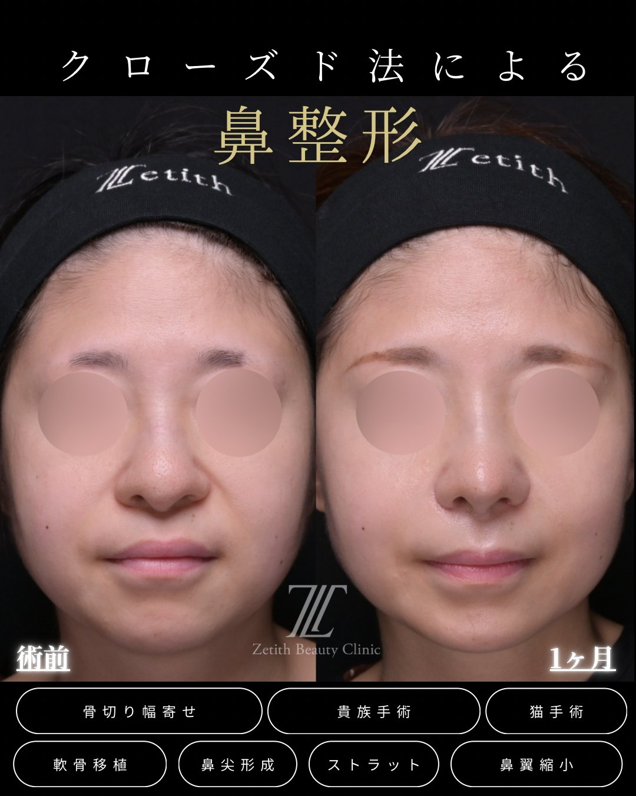
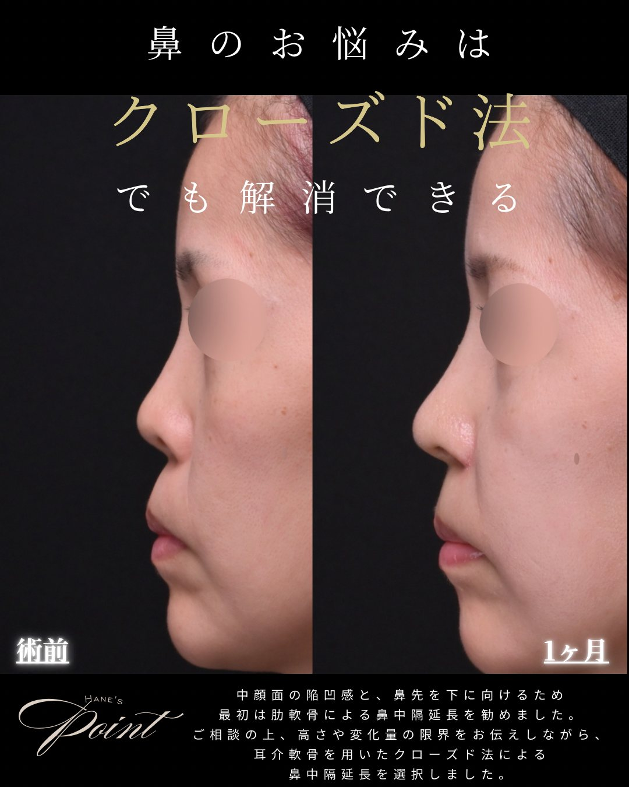

FEATURED
鼻整形の術式まるわかりガイド
鼻尖形成・鼻中隔延長・隆鼻・貴族手術・鼻翼縮小まで、各術式と組み合わせ方、クローズド法・他院修正を院長がまとめて解説。「まず全体像を知りたい」方はここから。
COLUMN ｜ 鼻整形コラム
福岡で鼻整形を検討する方へ。クローズド法を専門とする当院が、施術の種類・費用・ダウンタイム・症例を、鼻整形2,000件以上を担当する医師の視点でわかりやすく解説します。

FEATURED
鼻尖形成・鼻中隔延長・隆鼻・貴族手術・鼻翼縮小まで、各術式と組み合わせ方、クローズド法・他院修正を院長がまとめて解説。「まず全体像を知りたい」方はここから。
LATEST ARTICLES
 クローズド法 総合
クローズド法 総合オープン法との違い・受けられる施術・費用・ダウンタイム・症例まで、医師が総合解説します。
 鼻中隔延長
鼻中隔延長鼻先を前・下に伸ばす鼻中隔延長。ストラットとの違い、素材の使い分け、費用・DT・リスクを解説。

貴族手術小鼻の脇〜鼻の付け根のくぼみをゴアテックス・肋軟骨で整える貴族手術。素材の違い・費用を解説。

猫手術鼻の下（鼻の付け根）が凹んでいる部分に耳介軟骨・肋軟骨などの自家組織を入れて内側から土台を支え、前に出して整える猫手術。人工物なし・貴族手術との違いを解説。
 団子鼻
団子鼻鼻先が丸く見える原因と、鼻尖形成・軟骨移植・ストラットを組み合わせた改善を解説します。
 傷跡・バレない
傷跡・バレないバレる原因（傷跡・ダウンタイム・デザイン）と対策を、表に傷を残さないクローズド法の視点で解説。
 ダウンタイム
ダウンタイム施術別の腫れ・経過、楽に過ごすコツ、仕事・メイク・運動の再開時期を解説します。
このカテゴリーの記事は準備中です。
記事を読んでも「自分の場合はどうなの？」という点は、診察でこそ分かります。あなたの鼻に合った方法を医師がご提案します。まずは無料カウンセリングでお気軽にご相談ください。